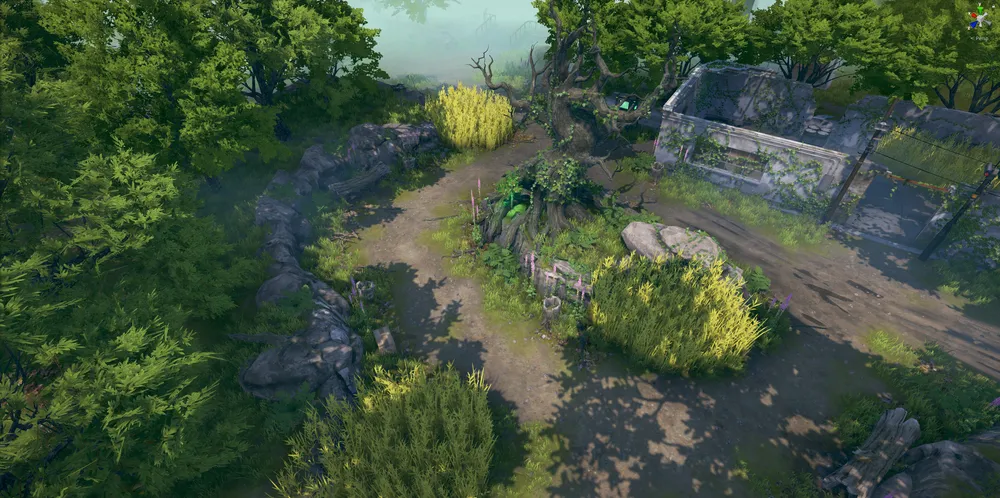

story 루미아 섬 루미아 섬은 이터널 리턴의 캐릭터들이 최후의 1인이 되기 위해 끊임없이 경쟁하는 곳이다. 총 21개 지역으로 구성되어 있으며 연구소와 오래된 선창을 제외한 19개 지역을 탐색할 수 있다. 연구소는 맵의 정중앙에 위치한 곳이면서 처음부터 금지구역으로 설정되어 있는 지역이다.  코발트 프로토콜 이터널 리턴의 4 vs 4 난투 모드 코발트 프로토콜에서는 양 팀이 각자 라이프 포인트 40을 가지고 게임을 시작하며 실험체 처치, 증폭 장치를 일정 시간 이상 점령, 감마 처치와 같은 방법으로 이 라이프 포인트를 깎을 수 있고, 상대의 라이프 포인트를 먼저 0으로 만드는 팀이 승리한다. 플레이 쿼터뷰 형식의 전투 스타일과 배틀로얄 독특한 크래프팅 시스템이 합쳐진 "새로운 형태의 서바이벌 MOBA 게임" 이터널 리턴을 플레이해보세요 초보자 가이드 초보자 가이드 정식 오픈 변경점 가이드